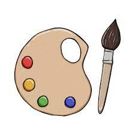

Pintura
Este paraescolar tiene el objetivo de enseñarles a sus alumnos sobre el arte, específicamente la pintura, cada semestre se usan materiales algo diferentes aunque siempre relacionados al arte.
Por ejemplo: El semestre anterior los alumnos de pintura estaban aprendiendo sobre las acuarelas y cómo usarlas, esta técnica tiene varias variantes pero una de las más populares es en donde se tienen varias pastillas de colores, el pintor les aplica un poco de agua, dependiendo de la intensidad de color que quiere es la cantidad de agua que se le pone, mientras más agua, menos intenso y visible el color, si se le pone menos agua el color se verá más intenso, una vez aplicada el agua se usa el pincel y se pinta sobre algún papel adecuado para acurelas, de preferencia hojas de un gramaje superior a 200g.
Horarios:
Turno vespertino
| Horarios |
Lunes |
Sábado |
| 8:00-9:00 |
|
1ro matutino |
| 9:00-10:00 |
1ro vespertino |
1ro matutino |
| 10:00-11:00 |
1ro verspertino |
PRE-SELECTIVO |
| 11:00-12:00 |
3ro vespertino |
PRE-SELECTIVO |
| 12:00-13:00 |
3ro vespertino |
SELECTIVO |
| 13:00-14:00 |
5to vespertino |
SELECTIVO |
Turno matutino
| Horarios |
Lunes |
SÁBADO |
| 14:00-15:00 |
5to matutino |
SELECTIVO |
| 15:00-16:00 |
3ro matutino |
|
| 16:00-17:00 |
3ro matutino |
|
.jpg)